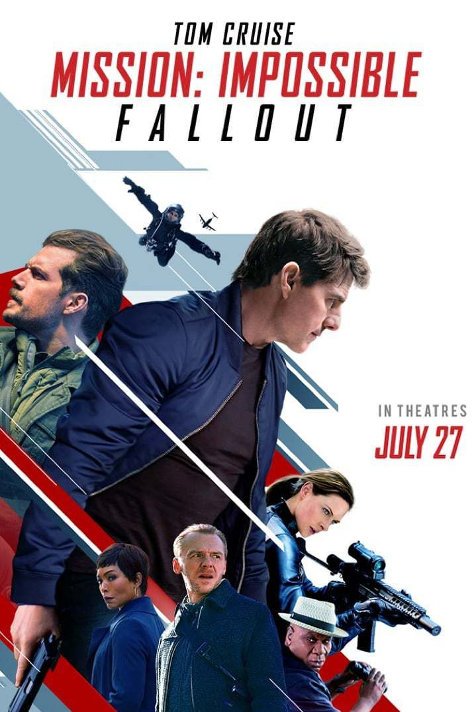
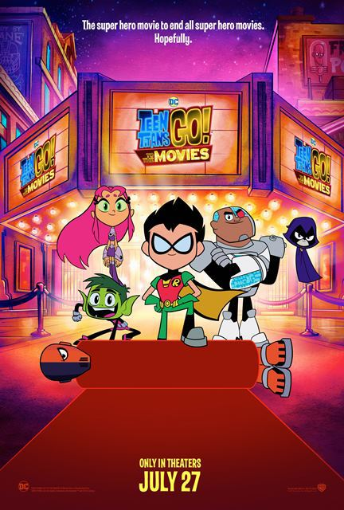
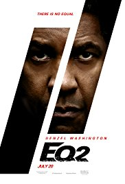
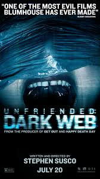
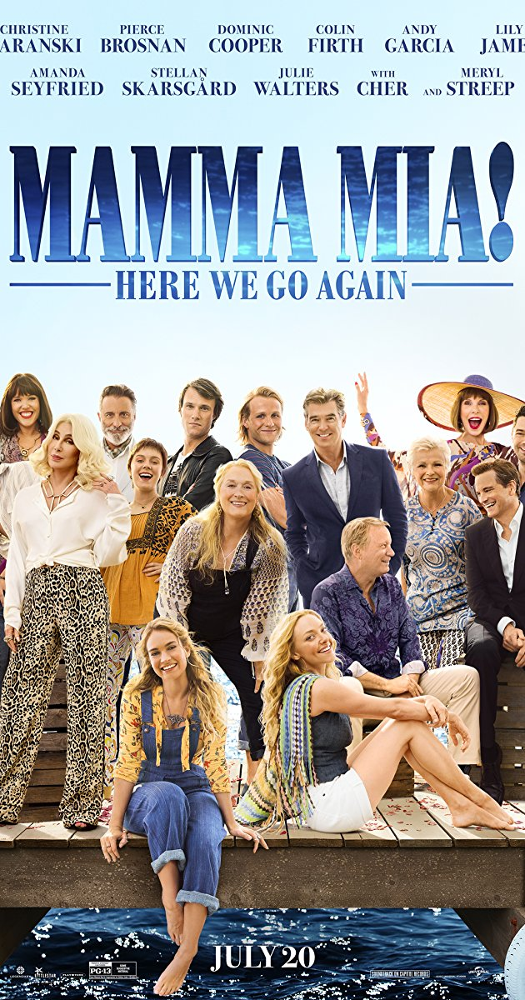

July 27, 2018:

~MISSION: IMPOSSIBLE - FALLOUT~
Mission: Impossible - Fallout finds Ethan Hunt (Tom Cruise) and
his IMF team (Alec Baldwin, Simon Pegg, Ving Rhames) along with
some familiar allies (Rebecca Ferguson, Michelle Monaghan) in a
race against time after a mission gone wrong.

~TEEN TITANS GO TO THE MOVIES~
When the Teen Titans go to the big screen, they go big! “Teen Titans GO!
to the Movies” finds our egocentric, wildly satirical Super Heroes in
their first feature film extravaganza—a fresh, gleefully clever,
kid-appropriately crass and tongue-in-cheek play on the superhero genre,
complete with musical numbers. It seems to the Teens that all the major
superheroes out there are starring in their own movies—everyone but the
Teen Titans, that is! But de facto leader Robin is determined to remedy the
situation, and be seen as a star instead of a sidekick. If only they could
get the hottest Hollywood film director to notice them. With a few madcap
ideas and a song in their heart, the Teen Titans head to Tinsel Town,
certain to pull off their dream. But when the group is radically misdirected
by a seriously super villain and his maniacal plan to take over the Earth,
things really go awry. The team finds their friendship and their fighting
spirit failing, putting the very fate of the Teen Titans themselves on the
line!
July 20, 2018:

~THE EQUALIZER 2~
Denzel Washington returns to one of his signature roles in the
first sequel of his career. Robert McCall serves an unflinching
justice for the exploited and oppressed – but how far will he go
when that is someone he loves?

~UNFRIENDED: DARK WEB~
A 20-something finds a cache of hidden files on his new laptop and
is thrust into the deep waters of the dark web.

~MAMMA MIA: HERE WE GO AGAIN!~
The film goes back and forth in time to show how relationships forged
in the past resonate in the present. Lily James plays Young Donna,
Donna is played by Meryl Streep.